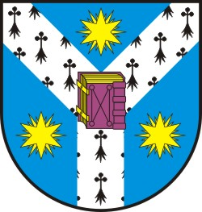
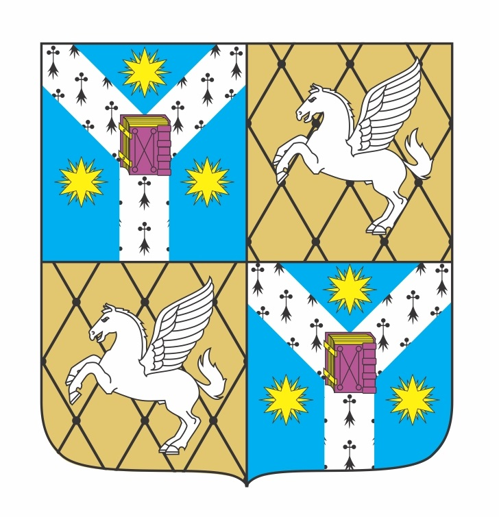
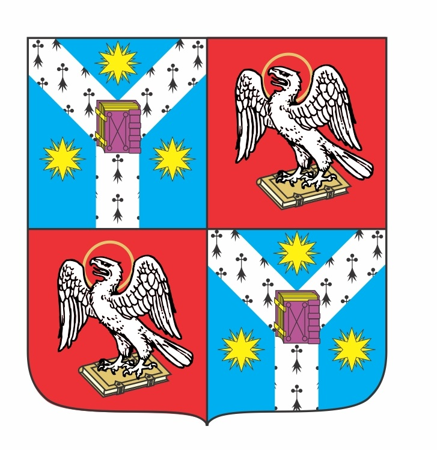
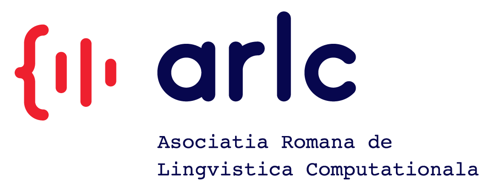

EUROLAN 2019
Jointly organised by:
"Alexandru Ioan Cuza" University of Iași
Computer Science Faculty of Iași
 Faculty of Letters, Iași
Phillipide?????

Romanian Association of Computational Linguistics
Academy of Technical Sciences of Romania
We invite you to participate in an exciting week of lectures and practical work, which will drive you discover the fascinating worlds of computational linguistics and natural language processing, two closely related fields of science in which computer scientists and linguists combine their skills and creativity to copy on the computer the linguistic abilities of human beings.
The School will be the 14th in a series initiated in 1993 and run since then every two years. The complete list of EUROLAN schools can be found at this link: http://eurolan.info.uaic.ro/2017/. The didactic paradigm of this year edition will be “learning by doing”, as IT and humanity students will be put together in mixed teams to solve a challenging problem.
Guided by our mentors, participants will decipher models and techniques for text annotation and processing, will develop a collection of annotated texts and will learn how to train the machine to develop abilities to recognise topics and opinions in texts.
To whom is the school addressed?
To whom is the school addressed?
To whom is the school addressed?
To whom is the school addressed?
The School is dedicated mainly to university students at the bachelor, master and PhD levels, but gifted college students, interested In learning and trying their passionate minds and hands at the practice of developing annotated corpora and training AI systems, are also welcome.
To encourage the participation of all categories of students, from college to PhD, the School will be free of charge. Our tutorialists have generously offered their help without being rewarded and we will try to cover any spendings from (presumable many...) sponsorships (which will be announced at later dates). However, this policy will perhaps trigger no coffee-and-tea flavoured breaks, but we strongly encourage participants to bring their homemade biscuits and snacks during the school to offer to their teammates (and others…).
What? When? and behaviour rules?
What? When? and behaviour rules?
What? When? and behaviour rules?
Tutorials and practical sessions will deal with at least the following topics:
- techniques and methodologies of forming annotated linguistic resources
- issues of machine (deep) learning applied to text processing
- inter-annotator agreement and evaluation issues
- how to develop mobile applications based on natural language processing
all taught from an elementary to a medium level, to make them compatible with the attendants’ wide spectrum of backgrounds.
Tutorials and practical sessions will be organised from Monday to Friday, during afternoons and evenings, following a schedule which will generally include:
- 16:00 - 18:00 tutorials
- 18:00 - 20:00 practical sessions
- 20:00 - onwards: free discussions, networking, socialising.
The afternoon-evening schedule has been chosen in order to help participants having jobs or school/university commitments to be able to attend the School.
The day-by-day schedule of the School, titles of tutorials, duties to be accomplished during practical sessions and names of our invited tutorialists and monitors will be published later in the School pages (please visit them from time to time).
The counterface of the gratuity will be the application of strict rules of behaviour to our participants, with respect to attendance of sessions, commitment, implication, accomplishments of assigned tasks and keeping with the imposed deadlines for the practical work. Our monitors could, in extremis, even decide that an attendee who fails to comply with these rules and requirements must necessarily leave the School.
How to register and make teams?
How to register and make teams?
How to register and make teams?
To register, please fill in this form, not later than the morning of 22 April, to give us some time to fix details regarding the necessary working spaces, connection and presentation facilities. Since the number of active participants in the School will be limited, we will immediately contact you after this date to accept (or decline...) the registration.
In the first day of the School, May 6, the mixed teams will be formed, each grouping 4-5 people. Your preferences for teammates will be taken into consideration, but bear in mind that we want to have both IT and humanity students in all teams.
Accommodations
Accommodations
Accommodations
Participants coming from other places than Iași are eligible for accommodation in the University’s hostels, based on a request made on the online registration application. The accommodation costs per night are as follows: 175 RON per night - a double room, 132 RON per night - a single, breakfast included in both cases.
Important dates
Important dates
Important dates
| Date |
Event |
| 1 April, 8:00 AM |
Online registration opens |
| 22 April, 8:00 AM |
Registration closes |
| 23 - 24 April |
confirmed participants will receive introductory texts and guidelines; it could be that some of these materials be specially adapted to your specific knowledge level |
| 24 April - 6 May |
individual/guided study of the accepted participants; the recommended readings should be consulted in order to form a basic level of knowledge before the School actually begins |
| 6 (Monday) to 10 (Friday) May |
the School period |
| 11 May (Saturday) |
this day could also be considered, to finish some activities. |
Committee
Committee
Committee